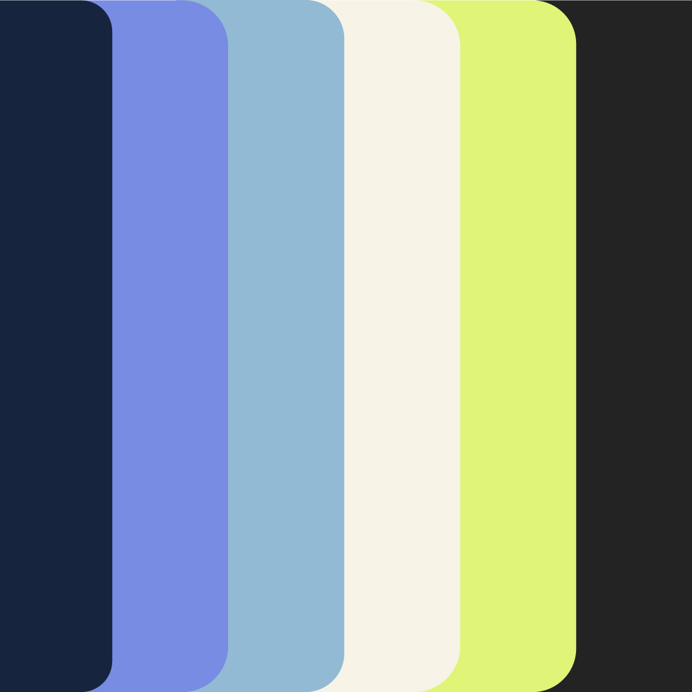

Colle
Uma identidade digital criada para organizar catálogos, aproximar pessoas e tornar a experiência de encontrar produtos e serviços mais clara.



Uma identidade que transforma catálogo em conexão.
O sistema visual da Colle foi pensado para comunicar organização, leveza e confiança em um catálogo digital fácil de navegar.